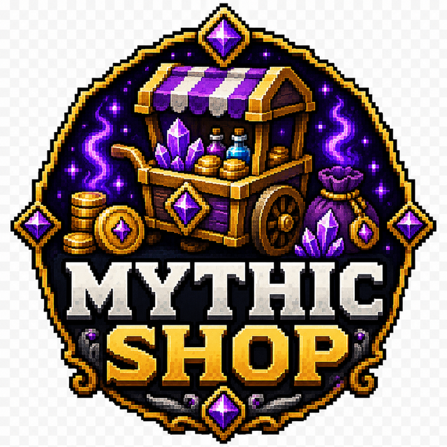

Direct Release Planned
MythicPrefixes
A prefix marketplace and complete lightweight chat formatter.
 Live plugin page views
Live plugin page views
—Spigot downloads
—Modrinth downloads
No ratings yetSpigot rating
Direct release plannedCurrent version
—Last public update
Live usage metrics
bStats network activity
Aggregated installation and player activity reported by servers using this plugin.
7-day trend
—
Servers using the plugin
7-day trend
—
Players on reporting servers
Full overview
A prefix marketplace and complete lightweight chat formatter.
MythicPrefixes combines a cosmetic prefix marketplace with a lightweight chat formatter. Players purchase, collect and equip titles while the server controls how that selection appears beside names and messages.
The system is designed to work without forcing a separate chat plugin. PlaceholderAPI content can be included in the format, and a configurable default prefix keeps players without a purchased cosmetic visually consistent.
Best suited toCommunity servers that want a prefix economy and modern chat formatting in one maintained project.
How it works
Purchase a title, manage the collection and display it everywhere
Players browse the prefix shop, purchase entries through Vault and choose an active prefix from the owned collection. Rarity, colour and price make the catalogue feel like a real cosmetic progression system.
The built-in chat formatter combines the selected prefix with display names, PlaceholderAPI output and the message. DiscordSRV compatibility keeps Minecraft chat forwarding functional.
- Cosmetic economy with no gameplay advantage
- Owned-prefix collection and selection
- Built-in chat formatting and default fallback
- PlaceholderAPI and DiscordSRV-aware design
Administration
Configuration and live-server use
Prefixes, rarity tiers, prices, permissions and formatting are configurable. Administration menus support catalogue management without requiring direct player-data edits.
CompatibilityPaper 1.21.x
IntegrationsVault, PlaceholderAPI, DiscordSRV
VersionDirect release planned
Feature breakdown
Everything included in MythicPrefixes
Each headline feature is expanded below so visitors can understand the real server use rather than seeing a short tag list.
✓
Purchasable prefix shop
Players spend economy balance on permanent cosmetic titles.
✓
Owned-prefix management
Unlocked entries remain available through a personal collection menu.
✓
Built-in chat formatting
The plugin can own the final chat layout instead of depending on an outdated formatter.
✓
Rarity tiers and pricing
Common through exotic entries create clear cosmetic progression.
✓
Default prefix support
Players without a selected cosmetic still receive intentional presentation.
✓
Admin management menus
Staff can create, grant, remove and organise prefixes more easily.
Getting started
Installation and rollout
This project is not currently offered as a public platform download; its page documents the system and development status.
- 1
Install Vault, an economy provider and PlaceholderAPI.
- 2
Remove or disable conflicting chat-format ownership.
- 3
Configure prefixes, rarity prices, default presentation and DiscordSRV behaviour.
- 4
Test normal chat, nicknames, placeholders and Discord forwarding.
Related projects
Continue exploring
Death Messages
LastWords
Hundreds of funny death messages with an in-game editor.
ChatFunEditor
179 downloads1.2.4 version
View full plugin page →Cosmetics & Economy
MythicJoins
Purchasable join and leave messages with real player identity.
CosmeticsVaultGUI
8 downloads1.0 version
View full plugin page →
Server ExclusiveDynamic Economy
MythicShop
A GUI market with stock pressure, category editing and custom-item support.
EconomyShopPrivate
PrivateServer Exclusive
View full plugin page →